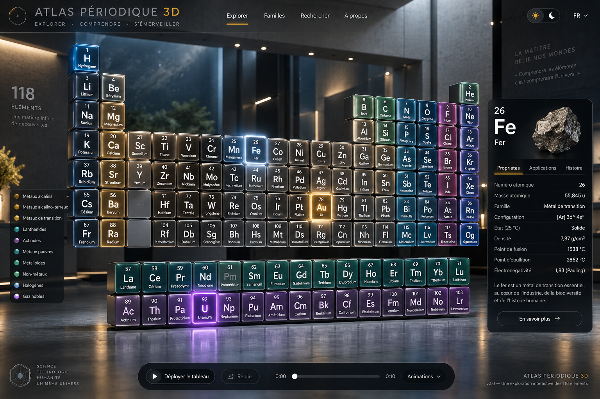
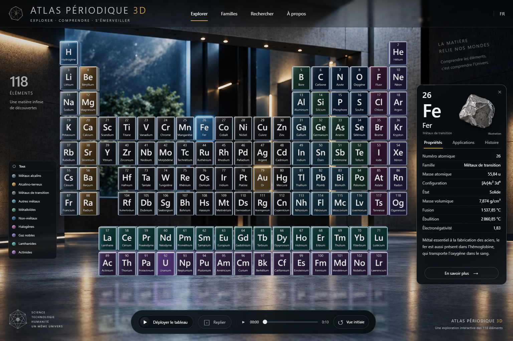

V4 · Galerie et modules métalliques
Atlas Périodique 3D
La cible et les captures réelles sont comparées à la même résolution : 1536 × 1024. Le sélecteur permet de suivre les corrections, jusqu’au rendu hybride actuel.
Image cible validée
Capture réelle du navigateur
Le rendu actuel combine un décor fixe dérivé de la cible avec 118 éléments, leurs animations et leurs reflets calculés en 3D. Le décor ne change pas de perspective avec la caméra. La galerie entièrement modélisée reste disponible pour comparaison.
Les nouvelles coques métalliques suivent les racines animées du GLB original, conservé à l’identique. Les proportions des coques et l’espacement des rangées ont été adaptés ; les inscriptions françaises ont été reconstruites. Les erreurs chimiques de l’image cible ne sont pas reprises.